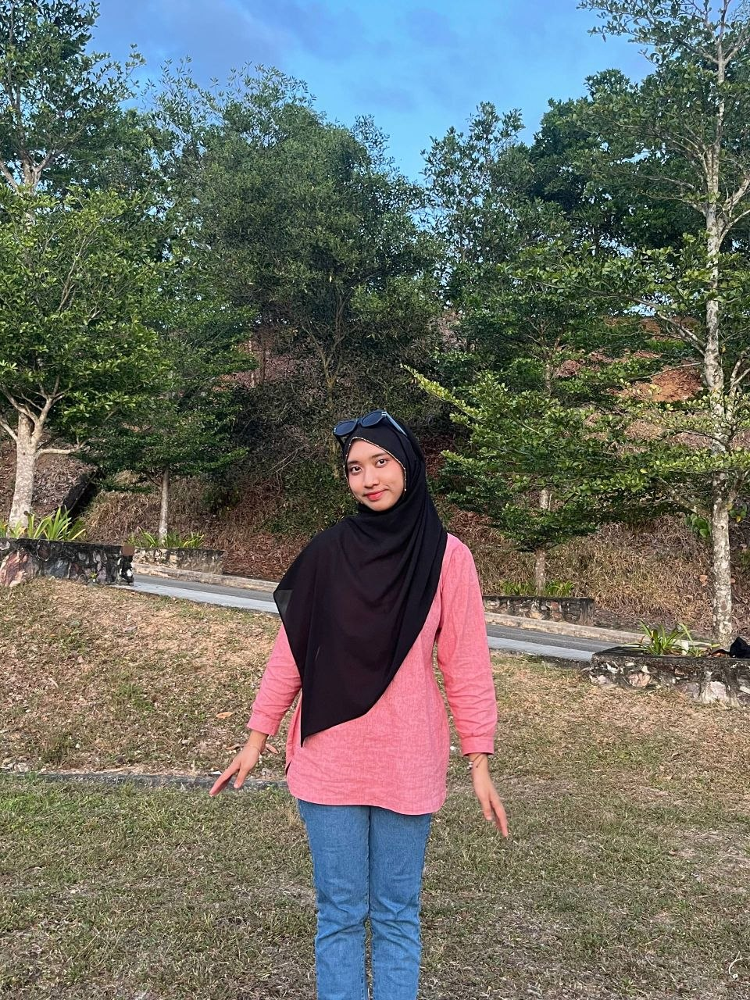

WELCOME TO MY PERSONAL WEBSITE!
Short Bio

Name: Siti NurSafirah binti Abdul Halid
No.Matrix: 2025418078
Hello! I am Safirah, a student from class KSI2602B, Faculty of Information Science (hons) in Library Management at University Teknologi Mara (UiTM) Merbok Kedah Branch.
Welcome to my personal website where you can explore more about me, my collection, Favourite Song, my education, Family & my Contact.
This website is created for IML470 Individual Project
Prepare for: Encik Ahmed Noor Kader Mustajir bin MD Eusoff
Created by Safirah, 2026